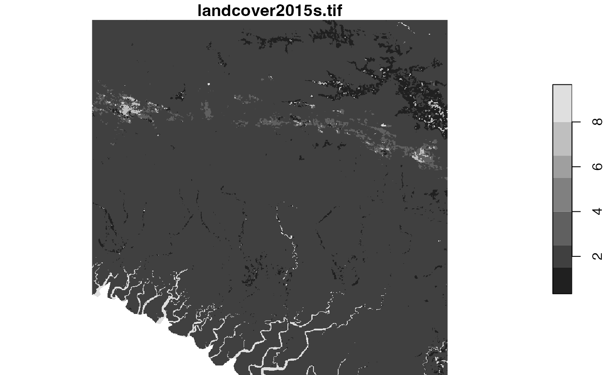
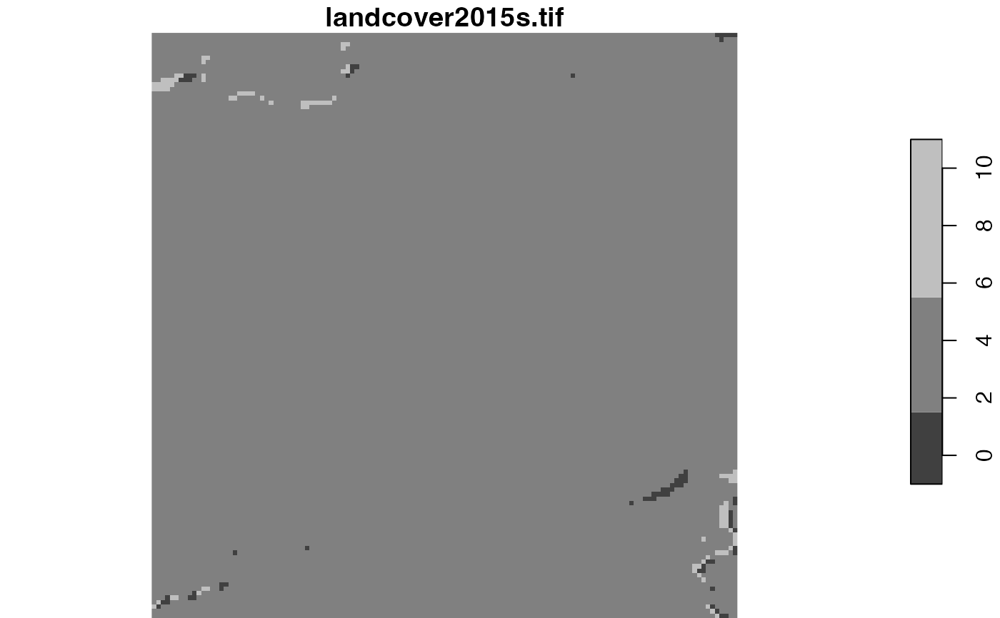
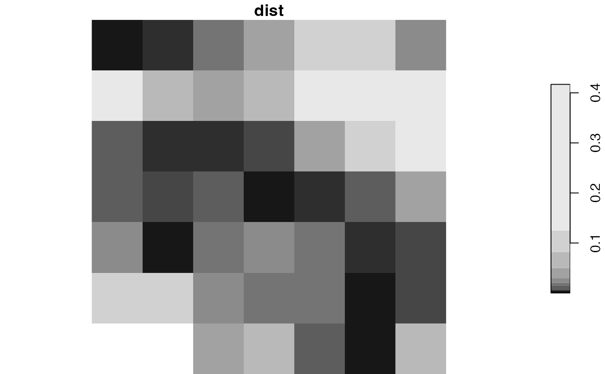
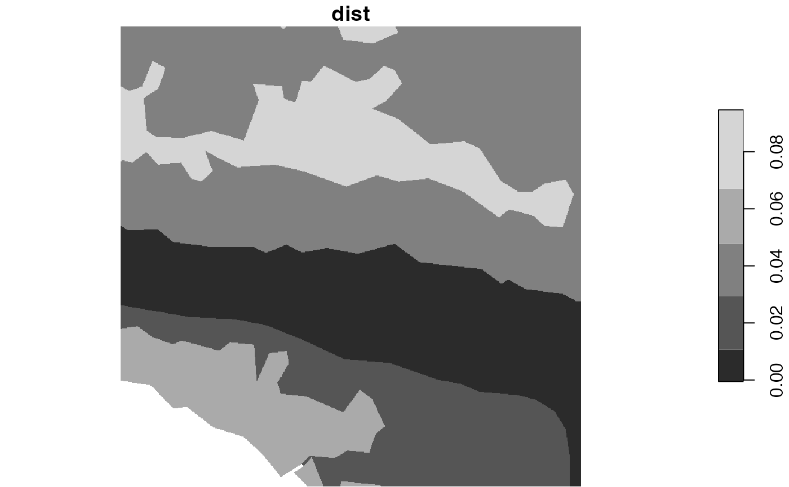

Searches for areas with similar spatial patterns in categorical data.
It accepts a categorical raster dataset with one or more attributes, and compares it to the second (usually larger) dataset with the same attributes.
The first dataset is either compared to a whole area, areas divided into regular windows, or areas divided into irregular windows from the second dataset.
This function allows for several types of comparisons using different representations of spatial patterns, including "coma" (co-occurrence matrix), "cove" (co-occurrence vector), "cocoma" (co-located co-occurrence matrix), "cocove" (co-located co-occurrence vector), "wecoma" (weighted co-occurrence matrix), "wecove" (weighted co-occurrence vector), "incoma" (integrated co-occurrence matrix), "incove" (integrated co-occurrence vector). These representations are created for both datasets, and next a distance between them is calculated using a selected measure from the philentropy::distance function.
Additional parameters, such as neighbourhood or normalization types, are also available.
lsp_search( x, y, type, dist_fun, window = NULL, neighbourhood = 4, threshold = 0.5, ordered = TRUE, repeated = TRUE, normalization = "pdf", wecoma_fun = "mean", wecoma_na_action = "replace", ... ) # S3 method for stars lsp_search( x, y, type, dist_fun, window = NULL, neighbourhood = 4, threshold = 0.5, ordered = TRUE, repeated = TRUE, normalization = "pdf", wecoma_fun = "mean", wecoma_na_action = "replace", ... )
| x | Object of class |
|---|---|
| y | Object of class |
| type | Type of the calculated signature. It can be |
| dist_fun | Distance measure used. This function uses the |
| window | Specifies areas for analysis. It can be either: |
| neighbourhood | The number of directions in which cell adjacencies are considered as neighbours: 4 (rook's case) or 8 (queen's case). The default is 4. |
| threshold | The share of NA cells to allow metrics calculation. |
| ordered | For |
| repeated | For |
| normalization | For |
| wecoma_fun | For |
| wecoma_na_action | For |
| ... | Additional arguments for the |
Object of class stars.
It has three attributes:
(1) id - an id of each window.
For irregular windows, it is the values provided in the window argument,
(2) na_prop - share (0-1) of NA cells for each window in the y object,
(3) dist- calculated distance between the x object and each window in the y object
library(stars) landcover = read_stars(system.file("raster/landcover2015.tif", package = "motif")) plot(landcover)ext = st_bbox(c(xmin = -249797.344531127, xmax = -211162.693944285, ymin = -597280.143035389, ymax = -558645.492448547), crs = st_crs(landcover)) landcover_ext = landcover[ext] plot(landcover_ext)ecoregions = read_sf(system.file("vector/ecoregions.gpkg", package = "motif")) plot(ecoregions["id"])s1 = lsp_search(landcover_ext, landcover, type = "cove", dist_fun = "jensen-shannon", threshold = 0.9, window = 1000)#>s2 = lsp_search(landcover_ext, landcover, type = "cove", dist_fun = "jensen-shannon", threshold = 0.5, window = ecoregions["id"])#>